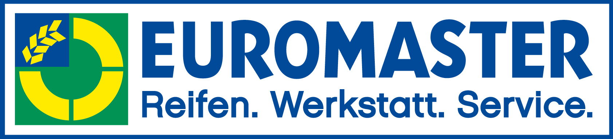

대표 로고대표 브랜드 마크
대표 로고대표 브랜드 마크유로마스터 Euromaster
유로마스터(Euromaster)는 미쉐린 그룹 산하의 유럽 타이어·자동차 정비 서비스 네트워크이다.
최종 업데이트
유로마스터는 어떤 브랜드인가
유로마스터(Euromaster)는 프랑스 미쉐린 그룹이 100% 소유한 유럽 최대 규모의 타이어·자동차 정비 소매 서비스 네트워크다. 1991년 미쉐린이 유럽 각국의 기존 타이어 전문 체인을 인수·통합해 단일 브랜드로 출범시켰고, 본사는 미쉐린의 본거지인 프랑스 클레르몽페랑에 있다.
첫 번째 전환점은 1991년 ATS 등 여러 독립 정비망을 흡수한 브랜드 통합이며, 두 번째는 매장형 거점과 이동형 출장 서비스를 결합한 옴니채널 정비망으로의 확장이다. 현재 유럽 17개국에서 약 1만1천 명, 직영·가맹 약 2,300개 서비스 센터, 약 2,800대 모바일 유닛을 운영한다.
유로마스터는 어떻게 봐야 할까
유로마스터의 핵심은 미쉐린의 제조-유통-서비스 수직통합 구조의 마지막 고리라는 점이다. 미쉐린은 타이어를 만들고, 유로마스터는 그 타이어가 교체·관리되는 현장을 직접 장악함으로써 제품 판매 이후의 수익과 데이터를 모두 확보한다.
차별점은 세 가지다. 첫째, 직영·가맹 매장과 약 2,800대 모바일 유닛을 결합해 운전자가 거점을 찾는 방식과 정비가 차량으로 찾아오는 방식을 동시에 제공한다.
둘째, B2B 플릿(법인 차량단) 관리가 전략 축으로, 타이어 점검·교체뿐 아니라 가동시간 보장, 24시간 긴급 출동, 예산 통제, 타이어 건전성 모니터링을 묶은 관리형 계약으로 일회성 판매를 구독형 서비스로 전환한다. 셋째, 승용차부터 대형 트럭·농기계·산업 차량까지 차종별로 서비스를 세분화한다.
한국 독자에게는 미쉐린이라는 글로벌 제조사가 어떻게 유럽 전역의 오프라인 정비망을 자산화해 제조업의 한계를 넘어서는지, 그리고 전기차 전환기에 타이어가 단순 부품이 아니라 데이터·구독 비즈니스의 입구가 되는 흐름을 보여주는 사례다.
유로마스터는 어떻게 시작되고 성장했나
1990년대 초 유럽 타이어 유통은 국가별로 파편화돼 있었고, 독립 정비소와 지역 체인이 난립했다. 제조사 미쉐린은 타이어를 생산해도 교체·정비라는 부가가치 높은 후방 시장을 외부 사업자에게 내주는 구조적 한계에 직면했다.
첫 번째 전환점은 1991년이다. 미쉐린은 유럽 곳곳의 기존 타이어 전문 체인을 인수하고 이를 유로마스터라는 단일 포맷으로 전환·출범시켜 분산된 정비망을 하나의 범유럽 브랜드로 묶었다.
영국에서는 1965년 설립된 ATS가 1974년 약 70개 유니로열 센터를 흡수하며 성장했고, 1991년 유로마스터 연합에 합류해 ATS 유로마스터로 재편됐다. 두 번째 전환점은 인수·가맹·모바일 유닛을 결합한 확장 단계로, 매장형 거점을 넘어 출장 정비와 법인 플릿 관리까지 포괄하며 약 17개국 약 2,300개 센터 규모로 성장했다.
이로써 유로마스터는 미쉐린의 사실상 유럽 서비스 부문 역할을 맡게 됐다.
유로마스터의 브랜드 아이덴티티는 무엇인가
유로마스터의 핵심 가치는 합리적 가격, 숙련된 시공 품질, 투명하고 신뢰할 수 있는 서비스다. 브랜드 보이스는 과시적이지 않고 실용적이며, 약속한 가동시간과 빠른 대응으로 신뢰를 증명하는 방향에 맞춰져 있다.
비주얼 아이덴티티는 강한 단색 워드마크 중심으로, 산업적이면서도 명료한 톤을 유지해 미쉐린 그룹의 일원임을 드러낸다. 타깃은 이원화돼 있다.
일반 운전자에게는 동네에서 믿고 맡길 수 있는 타이어·정비 거점으로, 법인 고객에게는 차량단 전체의 가동률과 비용을 책임지는 운영 파트너로 자리한다. 24시간 긴급 출동, 평균 단시간 내 현장 대응 같은 운영 약속이 브랜드 신뢰의 근거가 된다.
유로마스터의 대표 제품과 서비스는 무엇인가
취급 서비스는 타이어 판매·교체·밸런싱·휠 얼라인먼트, 일반 차량 정비, 타이어 공기압 관리, 플릿 점검, 24시간 긴급 노상 지원을 포괄한다. 차종은 승용차·승합차부터 대형 트럭, 농기계, 토목·산업 차량까지 아우른다.
채널은 직영·가맹 매장, 차량으로 찾아가는 모바일 출장 피팅, 법인 대상 관리형 계약(Mastercare 등), 그리고 운전자가 출장 정비를 실시간 예약하는 모바일 앱으로 구성된다.
유로마스터는 지금 어떤 상태인가
본사는 프랑스 클레르몽페랑에 있으며, 지배구조상 프랑스 미쉐린 그룹이 100% 소유한 자회사다. 유럽 17개국(오스트리아·체코·덴마크·핀란드·프랑스·독일·이탈리아·네덜란드·노르웨이·폴란드·포르투갈·루마니아·스페인·스웨덴·스위스·튀르키예·영국)에서 운영된다.
다만 영국 법인 ATS 유로마스터는 지속된 손실과 시장 과잉공급, 비용 상승으로 2025년 다수 거점을 폐쇄한 데 이어 2026년 영국 사업의 구조적 철수 절차에 들어갔으며, 일부 매장은 타사로 매각됐다. 그룹 전체 매출 등 일부 재무 수치는 출처 간 편차가 있어 정확한 단일 수치는 미공개.
유럽 본토 사업은 계속 운영 중이며 미쉐린의 전기차 대응·플릿 데이터 서비스 전략과 연계되고 있다.
유로마스터 로고는 어떻게 변해왔나
대표 로고대표 브랜드 마크
대표 로고 1보관 이미지 1자주 묻는 질문
유로마스터는 어떤 산업의 브랜드인가요?
유로마스터는 모빌리티 분야의 브랜드입니다.
유로마스터의 브랜드 아이덴티티는 무엇인가요?
유로마스터의 핵심 가치는 합리적 가격, 숙련된 시공 품질, 투명하고 신뢰할 수 있는 서비스다.
유로마스터의 대표 제품은 무엇인가요?
취급 서비스는 타이어 판매·교체·밸런싱·휠 얼라인먼트, 일반 차량 정비, 타이어 공기압 관리, 플릿 점검, 24시간 긴급 노상 지원을 포괄한다.
유로마스터의 본사는 어디에 있나요?
본사는 프랑스 클레르몽페랑에 있으며, 지배구조상 프랑스 미쉐린 그룹이 100% 소유한 자회사다.
유로마스터의 공식 웹사이트는 어디인가요?
유로마스터의 공식 웹사이트는 https://www.euromaster.com/ 입니다.
출처와 검증
유로마스터 관련 참고: 공식 웹사이트. 브랜드명은 한글과 원어를 함께 표기하되 데이터에 없는 표기는 만들지 않습니다. 기원 국가·설립연도는 검수된 정의문에서 확인된 값을 우선하고, 없을 때만 공식 웹사이트 URL이 일치하는 위키데이터 개체의 값을 씁니다.